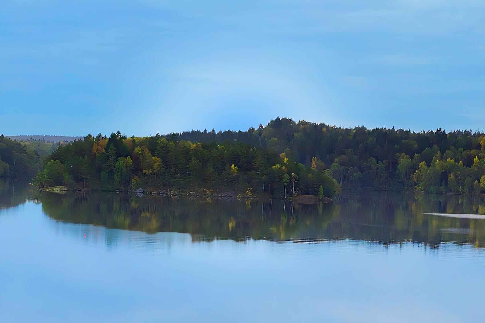

Delsjöområdet
Delsjöområdet är ett vackert naturområde strax utanför Sävedalen, känt för sina stora skogar, glittrande sjöar och populära vandringsleder. Här kan besökare njuta av friluftsliv året runt, med möjligheter till bad, paddling, löpning och skidåkning under vintern. Området är en del av Göteborgs största naturreservat och bjuder på en harmonisk tillflykt från stadens puls. 🌿🏞️